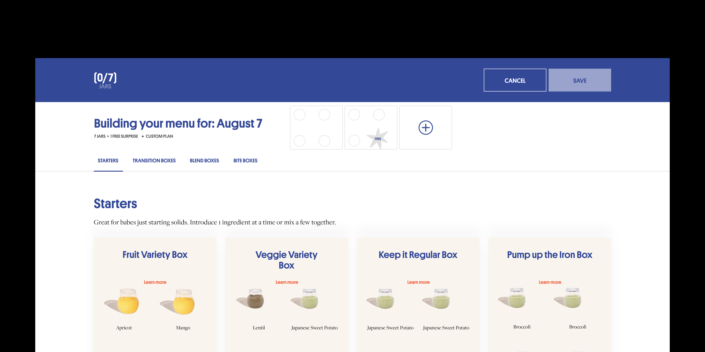
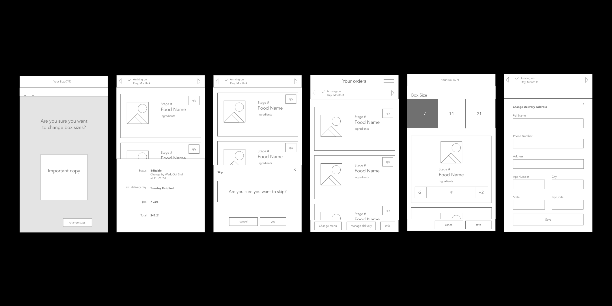
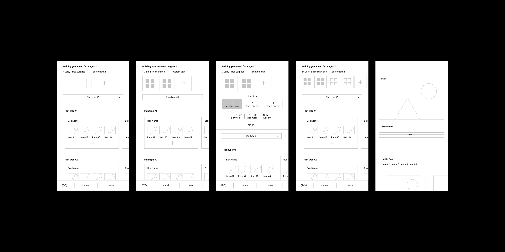
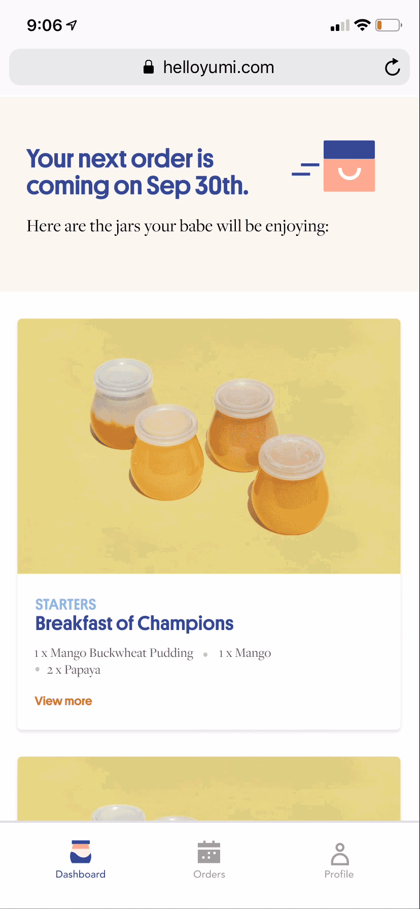
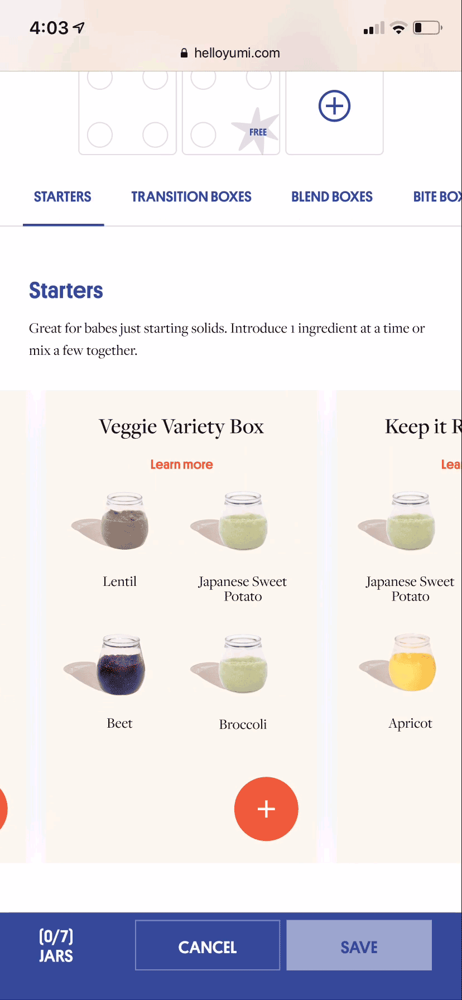
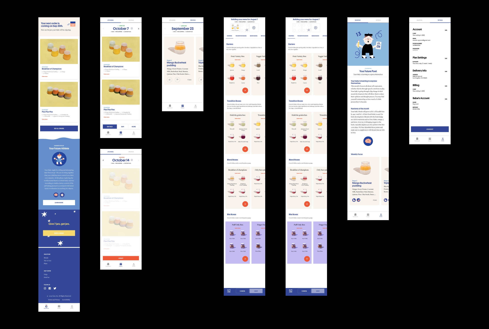

case study
Account
Developed and designed a dashboard that composed of all of Yumi's e-commerce needs.
Company: Yumi
Role: Product Designer
Timeline: Dec 2018 - Jan 2019 - Feb 2019 / May 2019 - Jun 2019 / Jul 2019 - Aug 2019
project link Read More 
At the center of Yumi's dashboard is a web application built to make Yumi's e-commerce experience simple and familiar. Users were able to view their upcoming orders, manage their future orders, rate their previous orders, and track their child's milestone progress.
Challenges
When developing a framework for our dashboard, the first major challenge was finding the right balance between function, visual elements, and navigation that allowed for a simple and usable experience. Since our application would be mainly used via a mobile web browser, we had to design against the screen taxing navigation bars. This constraint influenced the entire mapping of the user experience.

Our second major challenge was making an intuitive way of customizing orders. We needed to come up with an experience that was scalable to our varying plan sizes – 7, 14, 21 jars – but also considerate towards our tray size limitations – each tray carried 4 jars.

Solutions
In order to find the right balance, we decided to build our experience around a mobile web application approach instead of a mobile web page. Since a majority of users used Yumi through their mobile device, we wanted to provide an experience that resembled their typical behavior with web services while providing the power of a native app. Our web application was divided into the following 3 sections: dashboard, where the user was able to view their upcoming order and manage referrals, orders, where the user was able to manage future orders and rate previous orders, and profile, where the user was able to view their child's milestone progress and manage their settings. To further help with usability, we decided to use sub navigation bars to help the user navigate between functions. The trade-offs for our narrow design approach was a decrease in technical debt since it was faster to build a web app than to build a native app and an increase in scalability due to the architecture of the application.

In order to make our customize order experience intuitive, we needed to find a way to direct the user through customizing in a simple manner while limiting navigation. To guide the user through their shopping experience, we visually designed our shopping cart and menu items into matching modular components that directed the user to build their order in building blocks. The user would have to add a menu item of 4 jars into an empty shopping cart block of 4. We decided to make our modular trays into sizes of 4 jars in order to scale with our plan sizes. To limit vertical navigation, we decided to split our jars into sub categories and use carousels to navigate each sub category.

Outcome
With its 3rd update since launch, I can say I have started a scalable framework for Yumi's e-commerce hub. Working in a fast-growing startup made me wear a lot of hats. From leading this project from concept to development, to designing wireframes and high fidelity mockups, I have tested a majority of my design process. On the soft side, I've learned how to understand the technical side of development and work with engineering constraints, and pushed myself past the ego towards being a team player.

Mobile Prototype